Migrating from ggmosaic to marimekko
migration-from-ggmosaic-to-marimekko.RmdWhy migrate?
ggmosaic was archived from CRAN on 2025-11-10 due to uncorrected issues. Key problems included reliance on internal ggplot2 APIs that broke on updates and a dependency on deprecated tidyr functions.
marimekko is a from-scratch replacement that uses only public ggplot2 APIs, depends only on ggplot2 and rlang, and follows standard ggplot2 aesthetic conventions.
The examples below are adapted from Jeppson & Hofmann (2023), showing each ggmosaic pattern and its marimekko equivalent.
Function mapping
| ggmosaic | marimekko | Notes |
|---|---|---|
geom_mosaic() |
geom_marimekko() |
Standard aes(), no product()
|
geom_mosaic_text() |
geom_marimekko_text() |
|
theme_mosaic() |
theme_marimekko() |
|
scale_x_productlist() |
not needed | Axis labels are automatic; use show_percentages = TRUE
in geom_marimekko()
|
scale_y_productlist() |
not needed | Axis labels are automatic |
product() |
not needed | Use formula = ~ a \| b
|
| — | geom_marimekko_label() |
New: text with background box |
| — | fortify_marimekko() |
New: extract tile data as data frame |
Side-by-side examples
The ggmosaic paper (Jeppson & Hofmann, 2023, The R
Journal 14(4)) uses the fly dataset from ggmosaic and
the built-in Titanic dataset. Since ggmosaic is no longer
on CRAN, we recreate the fly-based examples using
Titanic and HairEyeColor — both built-in R
datasets that need no extra packages.
One dimensional — spine plot and bar chart
The paper starts with single-variable plots showing different divider types (Figure 1 in Jeppson & Hofmann, 2023):
# ggmosaic — spine plot (one variable, default divider)
ggplot(data = titanic) +
geom_mosaic(aes(x = product(Class), fill = Class, weight = Freq))
# marimekko — one variable
ggplot(titanic) +
geom_marimekko(aes(fill = Class, weight = Freq), formula = ~Class) +
theme_marimekko() +
labs(title = "One variable: f(Class)")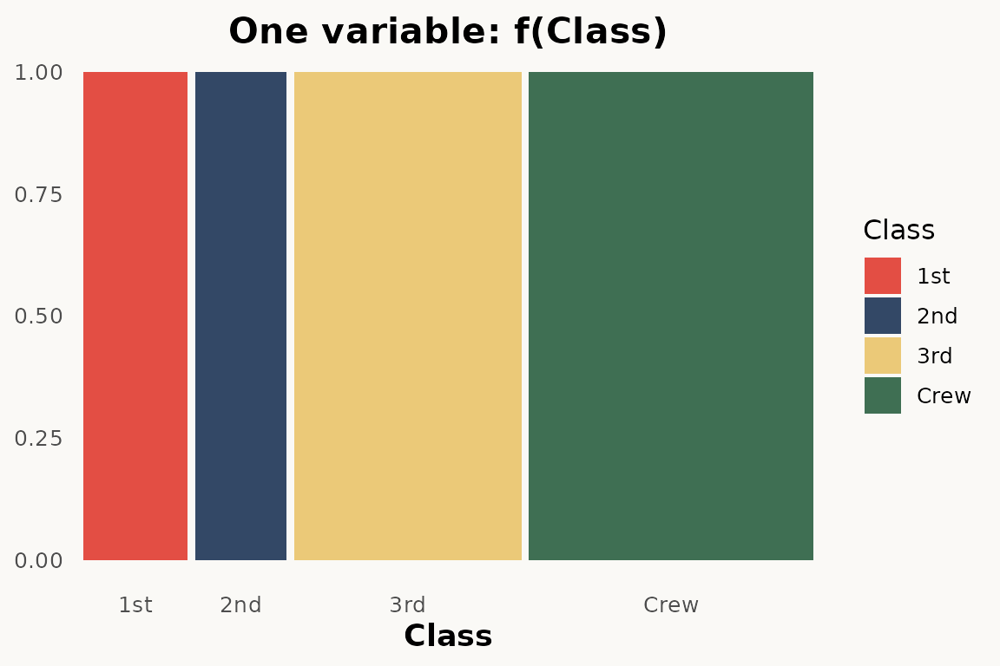
# ggmosaic — bar chart (one variable, hbar divider)
ggplot(data = titanic) +
geom_mosaic(
aes(x = product(Class), fill = Class, weight = Freq),
divider = "hbar"
)
# ggplot — barchart
# todo: needs percentage y scale
ggplot(titanic) +
geom_bar(aes(Class, weight = Freq, fill = Class)) +
theme_marimekko() +
labs(title = "One variable: f(Class)")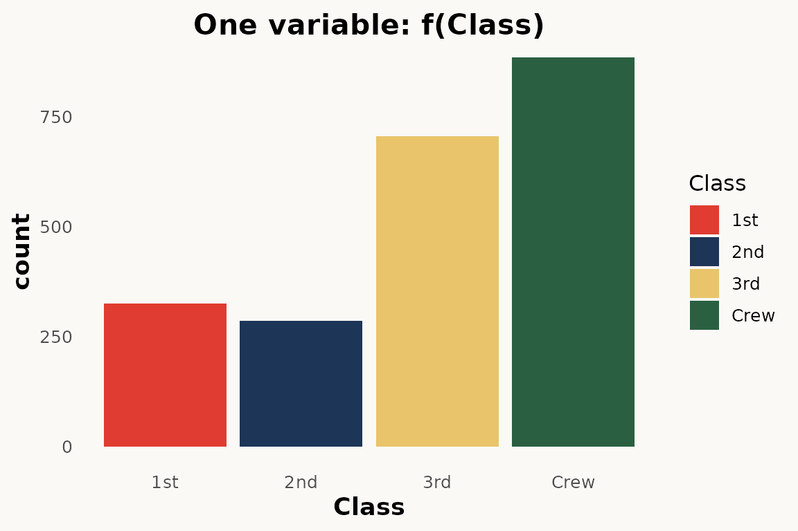
The main difference: no product()
wrapper — use formula = ~ Var instead. marimekko
does not have a divider argument; it always produces
vertical columns with horizontal stacking.
Two dimensional — mosaic plot and stacked bar chart
The paper shows two-dimensional mosaic plots where variable order in
product() controls the partitioning hierarchy (Figure
2):
# ggmosaic — two variables
ggplot(data = titanic) +
geom_mosaic(aes(
x = product(Class),
fill = Survived,
weight = Freq
))
# marimekko — two variables via formula
ggplot(titanic) +
geom_marimekko(aes(fill = Survived, weight = Freq),
formula = ~ Class | Survived
) +
theme_marimekko() +
labs(title = "Two variables: f(Survived | Class) f(Class)")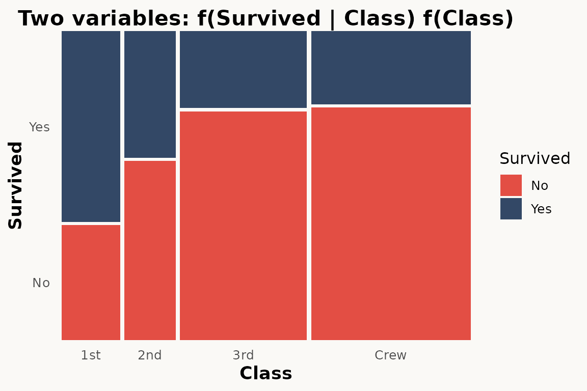
Three dimensional
The paper shows two-dimensional mosaic plots where variable order in
product() controls the partitioning hierarchy (Figure
3):
# ggmosaic — double-decker variables
ggplot(data = titanic) +
geom_mosaic(aes(
x = product(Survived, Class, Sex),
fill = Survived,
weight = Freq,
), divider = ddecker())
# marimekko — three variables via formula
ggplot(titanic) +
geom_marimekko(aes(fill = Survived, weight = Freq),
formula = ~ Sex + Class | Survived
) +
theme_marimekko() +
labs(title = "Three variables: f(Survived | Class, Sex)")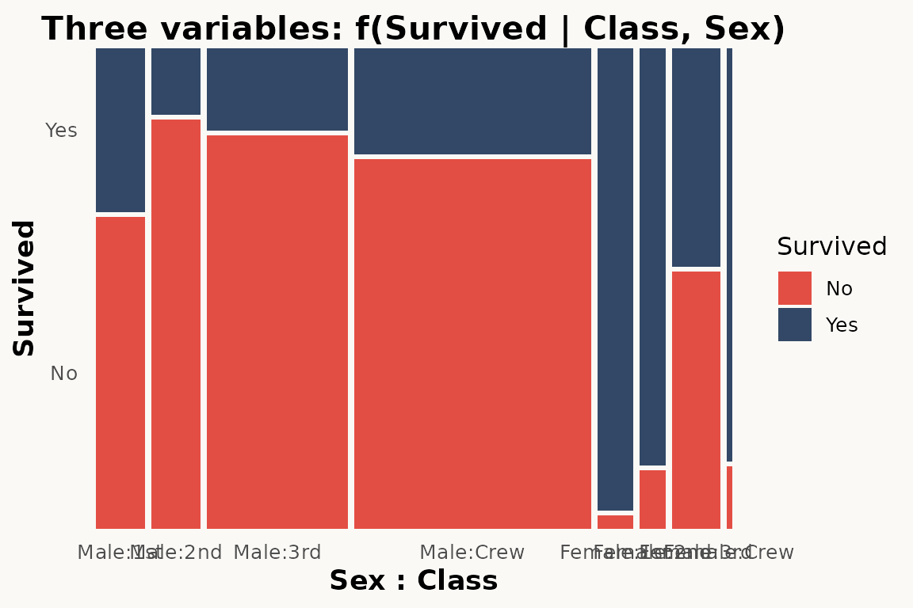
Three variables — nested mosaic
The paper demonstrates three-variable mosaics where a third variable adds another level of partitioning (Figure 4):
# ggmosaic — three variables via product()
ggplot(data = titanic) +
geom_mosaic(aes(
x = product(Sex, Survived, Class),
fill = Survived,
weight = Freq
))
# marimekko — three variables via formula
ggplot(titanic) +
geom_marimekko(aes(fill = Survived, weight = Freq),
formula = ~ Class | Survived | Sex
) +
theme_marimekko() +
labs(title = "Three variables: Class / Sex / Survived")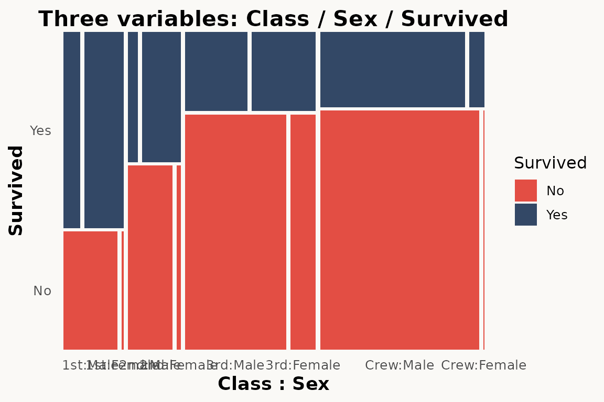
Conditioning with conds
The paper shows how conds creates conditional
distributions (Section 3.2):
# ggmosaic — conditioning
ggplot(data = titanic) +
geom_mosaic(aes(
x = product(Class),
fill = Survived,
weight = Freq,
conds = product(Sex)
))marimekko does not have a conds aesthetic. Use
facet_wrap() instead:
# marimekko — conditioning via faceting
ggplot(titanic) +
geom_marimekko(aes(fill = Survived, weight = Freq),
formula = ~ Class | Survived
) +
facet_wrap(~Sex) +
theme_marimekko() +
labs(title = "f(Survived | Class) conditioned on Sex")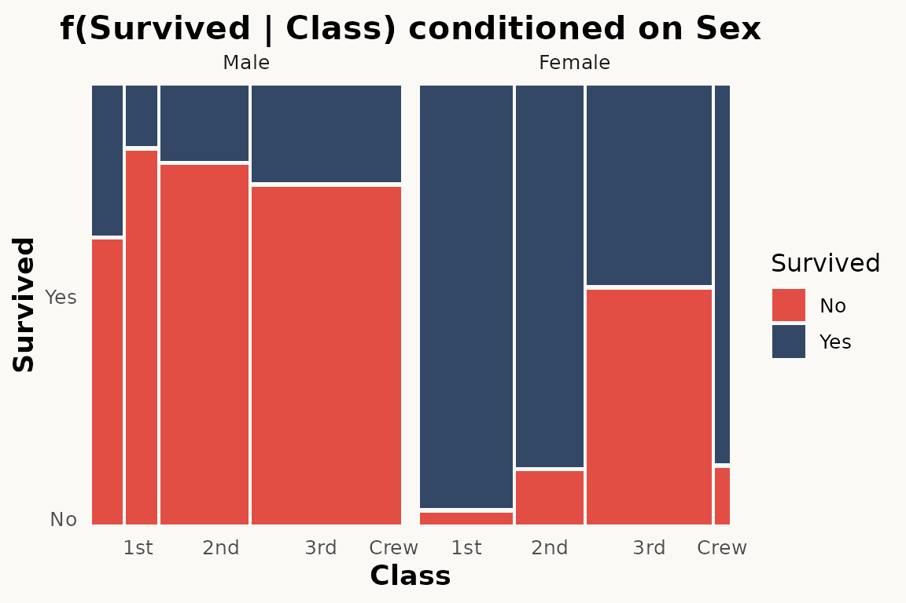
Faceting
The paper demonstrates facet_grid() as an alternative to
conditioning (Section 3.3):
# ggmosaic — faceting
ggplot(data = titanic) +
geom_mosaic(aes(
x = product(Class), fill = Survived, weight = Freq
)) +
facet_grid(~Sex)
# marimekko — faceting works the same way
ggplot(titanic) +
geom_marimekko(aes(fill = Survived, weight = Freq),
formula = ~ Class | Survived
) +
facet_wrap(~Sex) +
theme_marimekko() +
labs(title = "Mosaic faceted by Sex")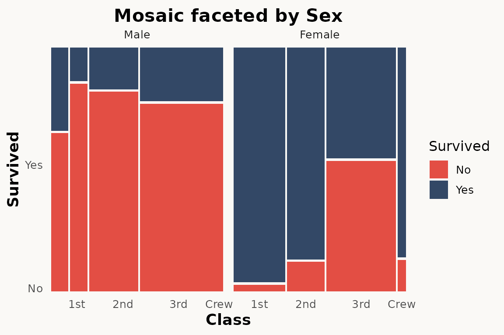
Divider types and standardize
The paper describes four fundamental partition types:
hspine, vspine, hbar, and
vbar (Section 4, Figure 5). These are combined to produce
spine plots, stacked bar charts, mosaic plots, and double decker
plots.
marimekko simplifies this — geom_marimekko() always
starts with horizontal splits and alternates direction with each
| in the formula. Use coord_flip() if you need
vertical-first orientation.
For equal-width columns (spine-plot style),
standardize = TRUE is available in
geom_marimekko_text() and
fortify_marimekko().
# ggmosaic — spine plot via divider
ggplot(titanic) +
geom_mosaic(aes(x = product(Class), fill = Survived, weight = Freq),
divider = c("vspine", "hspine")
)
# marimekko — proportional-width columns (default)
ggplot(titanic) +
geom_marimekko(aes(fill = Survived, weight = Freq),
formula = ~ Class | Survived
) +
theme_marimekko() +
labs(title = "Mosaic plot (proportional-width columns)")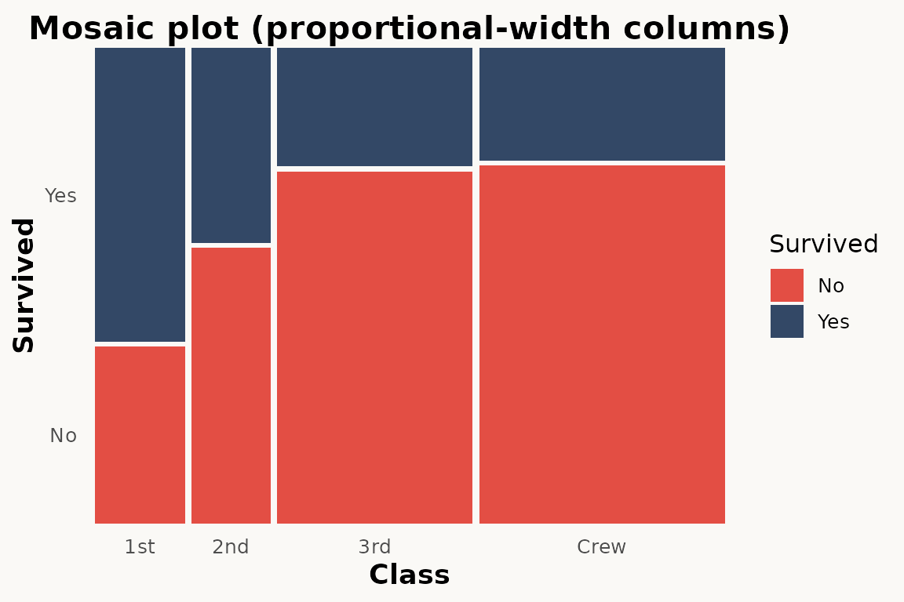
Offset / spacing
The paper shows how offset controls gaps between tiles
(Section 5):
# ggmosaic — single offset parameter
ggplot(data = titanic) +
geom_mosaic(aes(
x = product(Class), fill = Survived, weight = Freq
), offset = 0.02)marimekko provides independent gap_x and
gap_y parameters:
# marimekko — no gaps
ggplot(titanic) +
geom_marimekko(aes(fill = Survived, weight = Freq),
formula = ~ Class | Survived, gap_x = 0.02, gap_y = 0.02
) +
theme_marimekko() +
labs(title = "No gaps")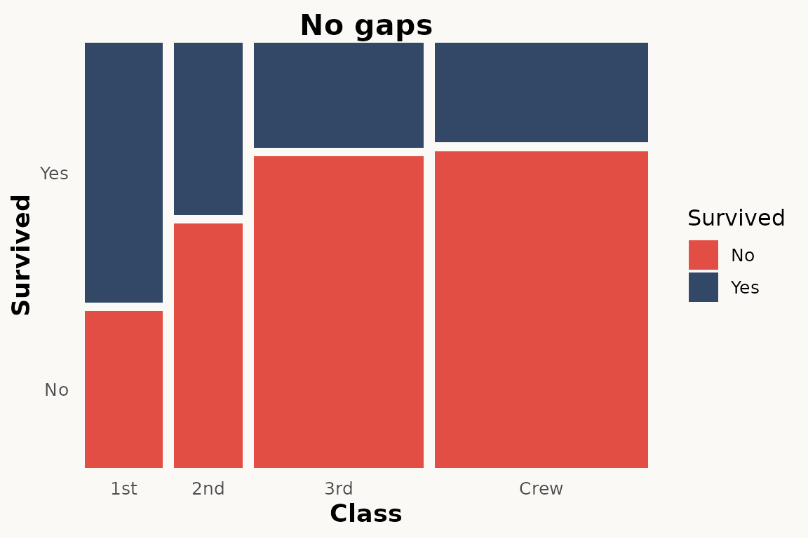
Text labels
The paper shows geom_mosaic_text() for adding labels
(Section 7):
# ggmosaic — automatic text labels
ggplot(titanic) +
geom_mosaic(aes(x = product(Class), fill = Survived, weight = Freq)) +
geom_mosaic_text(aes(x = product(Class), fill = Survived, weight = Freq))
# marimekko — automatic tile positions, only label needed
ggplot(titanic) +
geom_marimekko(aes(fill = Survived, weight = Freq),
formula = ~ Class | Survived
) +
geom_marimekko_text(aes(
label = after_stat(paste(Class, Survived, sep = "\n"))
)) +
theme_marimekko()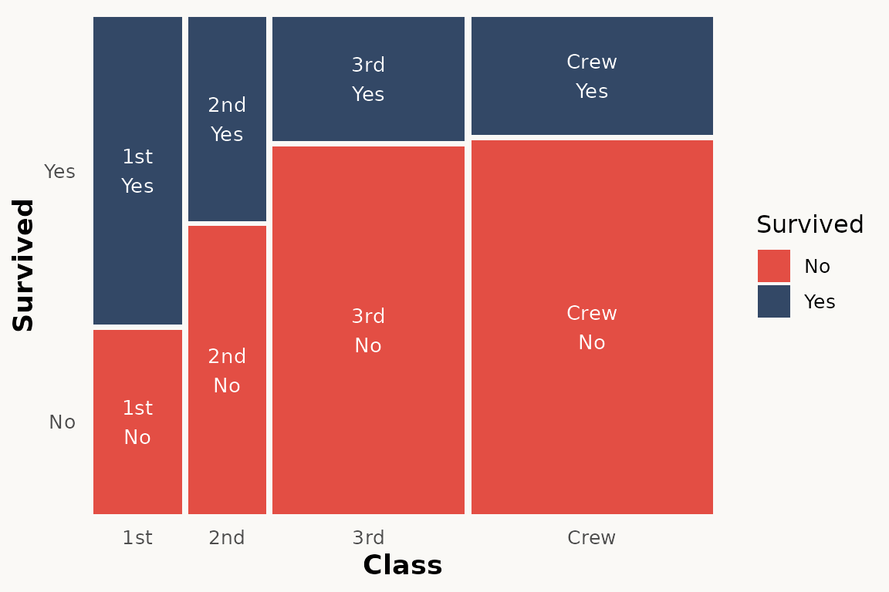
geom_marimekko_text() reads tile positions from the
preceding geom_marimekko() layer — only the
label aesthetic is needed. Use after_stat()
for computed variables like weight (count),
.proportion, or the original variable columns.
Axis labels and percentages
The paper uses scale_x_productlist() for axis
labels:
# ggmosaic
ggplot(titanic) +
geom_mosaic(aes(x = product(Class), fill = Survived, weight = Freq)) +
scale_x_productlist()
# marimekko — with optional marginal percentages
ggplot(titanic) +
geom_marimekko(aes(fill = Survived, weight = Freq),
formula = ~ Class | Survived,
show_percentages = TRUE
) +
theme_marimekko()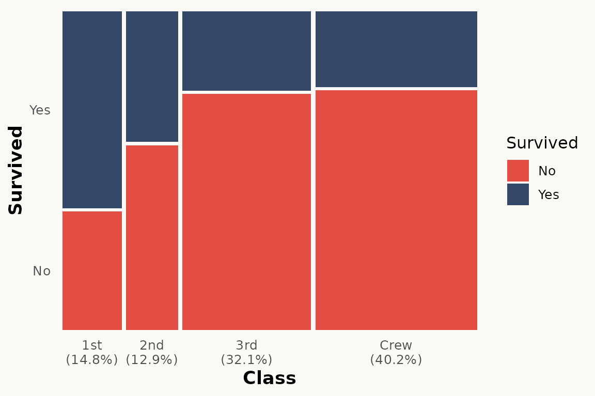
HairEyeColor — a larger example
The paper uses multi-variable examples to show how mosaic plots
reveal associations. Here we use the built-in HairEyeColor
dataset:
ggplot(hair) +
geom_marimekko(aes(fill = Eye, weight = Freq),
formula = ~ Hair | Eye,
show_percentages = TRUE
) +
theme_marimekko() +
labs(title = "Hair color vs Eye color")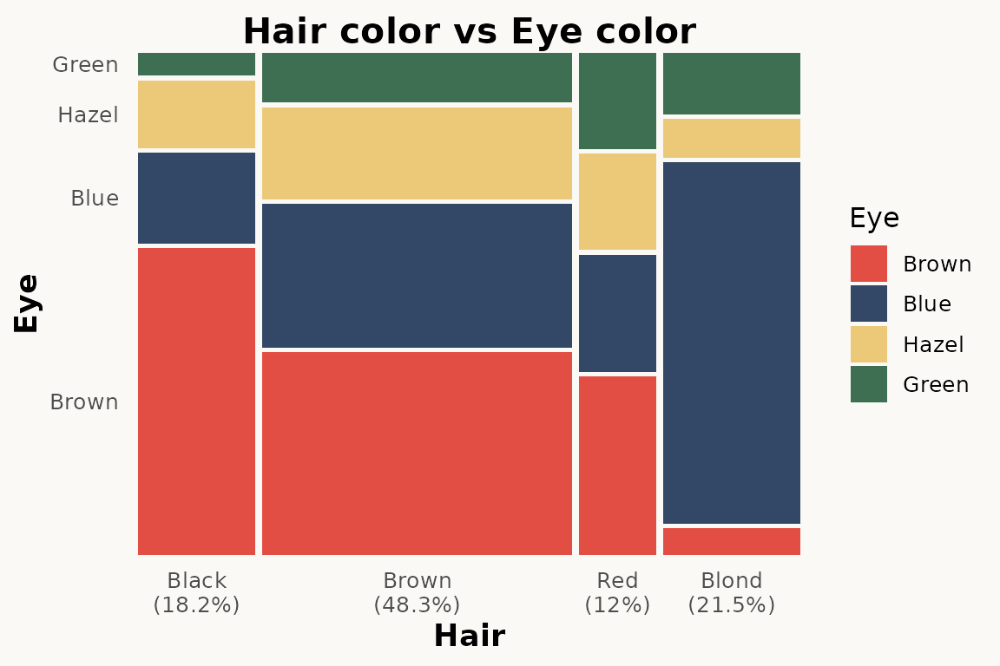
Three-variable version with Sex:
ggplot(hair) +
geom_marimekko(aes(fill = Eye, weight = Freq),
formula = ~ Hair | Sex | Eye
) +
theme_marimekko() +
labs(title = "Hair / Sex / Eye")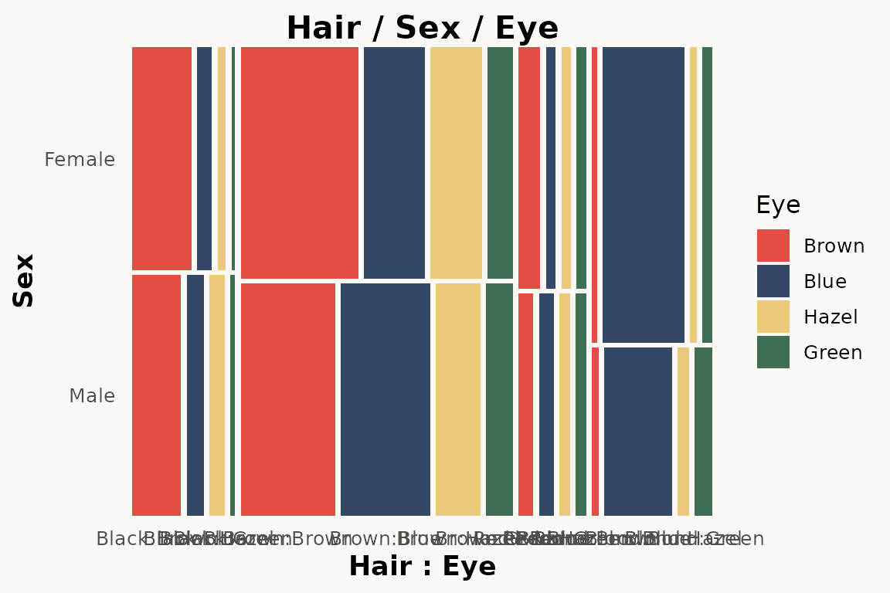
Key differences to be aware of
1. No product() wrapper
ggmosaic required wrapping variables in product().
marimekko uses a formula-based API:
-
formula = ~ a | b— specifies variable hierarchy (|alternates direction,+groups) -
fill— tile colour (defaults to last formula variable) -
weight— observation weights / counts
2. Automatic axis labels
ggmosaic handled axis labels internally. marimekko also adds axis
labels automatically via geom_marimekko(). Use
show_percentages = TRUE in geom_marimekko() to
append marginal percentages to the x-axis labels.
3. No divider argument
ggmosaic used divider = c("vspine", "hspine", ...) to
control partitioning direction. marimekko encodes direction in the
formula — | alternates between horizontal and vertical,
always starting horizontal. Use coord_flip() for
vertical-first orientation.
4. inherit.aes defaults to TRUE
ggmosaic set inherit.aes = FALSE by default, requiring
you to repeat aesthetics in every layer. marimekko follows ggplot2
convention — inherit.aes = TRUE — so aesthetics set in
ggplot(aes(...)) are inherited.
5. Text labels need explicit label aesthetic
geom_marimekko_text() requires
label = after_stat(weight) or similar. ggmosaic’s
geom_mosaic_text() auto-generated labels.
plotly support
marimekko plots work with plotly::ggplotly() out of the
box — simply pass your plot object and get an interactive version:
library(plotly)
p <- ggplot(titanic) +
geom_marimekko(aes(fill = Survived, weight = Freq),
formula = ~ Class | Survived
)
ggplotly(p)This also works with geom_marimekko_text(),
geom_marimekko_label()
Search-and-replace checklist
For a quick mechanical migration, apply these replacements:
geom_mosaic( → geom_marimekko(
geom_mosaic_text( → geom_marimekko_text(
theme_mosaic( → theme_marimekko(
library(ggmosaic) → library(marimekko)Then manually:
- Remove all
product()wrappers – addformula = ~ Var1 | Var2instead - Remove
condsaesthetic – usefacet_wrap()or a multi-variable formula - Remove
scale_x_productlist()/scale_y_productlist()– axis labels are now automatic - Remove
divider = ...– direction is encoded in the formula - Replace
offset = ...withgap/gap_x/gap_y - Add explicit
label = after_stat(weight)to text layers - Set
inherit.aes = FALSEonly where deliberately needed - Move
show_percentages = TRUEfrom scale togeom_marimekko(..., show_percentages = TRUE)
References
Jeppson, H. and Hofmann, H. (2023). Generalized Mosaic Plots in the ggplot2 Framework. The R Journal, 14(4), 50–73. doi:10.32614/RJ-2023-013